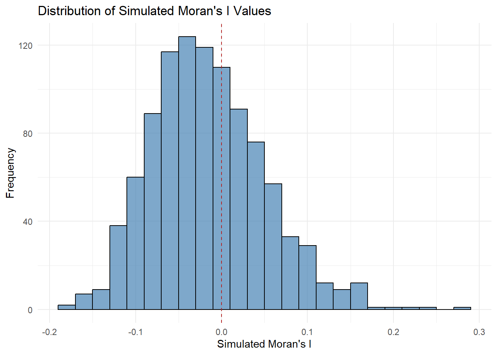

pacman::p_load(sf, spdep, tmap, tidyverse)Hands-on Exercise 5.1: Global Measures of Spatial Autocorrelation
1. Overview
In this hands-on exercise, we will learn how to compute Global Measures of Spatial Autocorrelation (GMSA) by using spdep package. By the end to this hands-on exercise, we will be able to:
import geospatial data using appropriate function(s) of sf package,
import csv file using appropriate function of readr package,
perform relational join using appropriate join function of dplyr package,
compute Global Spatial Autocorrelation (GSA) statistics by using appropriate functions of spdep package,
plot Moran scatterplot,
compute and plot spatial correlogram using appropriate function of spdep package.
provide statistically correct interpretation of GSA statistics.
2. Getting Started
2.1 The analytical question
In spatial policy, one of the main development objective of the local government and planners is to ensure equal distribution of development in the province. Our task in this study, hence, is to apply appropriate spatial statistical methods to discover if development are even distributed geographically. If the answer is No. Then, our next question will be “is there sign of spatial clustering?”. And, if the answer for this question is yes, then our next question will be “where are these clusters?”
In this case study, we are interested to examine the spatial pattern of a selected development indicator (i.e. GDP per capita) of Hunan Provice, People Republic of China.
2.2 The Study Area and Data
Two data sets will be used in this hands-on exercise, they are:
Hunan province administrative boundary layer at county level. This is a geospatial data set in ESRI shapefile format.
Hunan_2012.csv: This csv file contains selected Hunan’s local development indicators in 2012.
2.3 Setting the Analytical Tools
Before we get started, we need to ensure that spdep, sf, tmap and tidyverse packages of R are currently installed in your R.
sf is use for importing and handling geospatial data in R,
tidyverse is mainly use for wrangling attribute data in R,
spdep will be used to compute spatial weights, global and local spatial autocorrelation statistics, and
tmap will be used to prepare cartographic quality chropleth map.
The code chunk below is used to perform the following tasks:
creating a package list containing the necessary R packages,
checking if the R packages in the package list have been installed in R,
- if they have yet to be installed, RStudio will installed the missing packages,
launching the packages into R environment.
3. Getting the Data Into R Environment
In this section, we will learn how to bring a geospatial data and its associated attribute table into R environment. The geospatial data is in ESRI shapefile format and the attribute table is in csv fomat.
3.1 Import shapefile into r environment
The code chunk below uses st_read() of sf package to import Hunan shapefile into R. The imported shapefile will be simple features Object of sf.
hunan <- st_read(dsn = "data/geospatial",
layer = "Hunan")Reading layer `Hunan' from data source
`C:\Users\user\OneDrive - Singapore Management University\MITB\6. Geospatial Analytics and Applications\jeffleesl\ISSS626-GAA\Hands-on_Ex\Hands-on_Ex05\data\geospatial'
using driver `ESRI Shapefile'
Simple feature collection with 88 features and 7 fields
Geometry type: POLYGON
Dimension: XY
Bounding box: xmin: 108.7831 ymin: 24.6342 xmax: 114.2544 ymax: 30.12812
Geodetic CRS: WGS 843.2 Import csv file into r environment
Next, we will import Hunan_2012.csv into R by using read_csv() of readr package. The output is R data frame class.
hunan2012 <- read_csv("data/aspatial/Hunan_2012.csv")Rows: 88 Columns: 29
── Column specification ────────────────────────────────────────────────────────
Delimiter: ","
chr (2): County, City
dbl (27): avg_wage, deposite, FAI, Gov_Rev, Gov_Exp, GDP, GDPPC, GIO, Loan, ...
ℹ Use `spec()` to retrieve the full column specification for this data.
ℹ Specify the column types or set `show_col_types = FALSE` to quiet this message.3.3 Performing relational join
The code chunk below will be used to update the attribute table of hunan’s SpatialPolygonsDataFrame with the attribute fields of hunan2012 dataframe. This is performed by using left_join() of dplyr package.
hunan <- left_join(hunan,hunan2012) %>%
select(1:4, 7, 15)Joining with `by = join_by(County)`3.4 Visualising Regional Development Indicator
Now, we are going to prepare a basemap and a choropleth map showing the distribution of GDPPC 2012 by using qtm() of tmap package.
equal <- tm_shape(hunan) +
tm_fill("GDPPC",
n = 5,
style = "equal") +
tm_borders(alpha = 0.5) +
tm_layout(main.title = "Equal interval classification")
quantile <- tm_shape(hunan) +
tm_fill("GDPPC",
n = 5,
style = "quantile") +
tm_borders(alpha = 0.5) +
tm_layout(main.title = "Equal quantile classification")
tmap_arrange(equal,
quantile,
asp=1,
ncol=2)
4. Global Measures of Spatial Autocorrelation
In this section, we will learn how to compute global spatial autocorrelation statistics and to perform spatial complete randomness test for global spatial autocorrelation.
4.1 Computing Contiguity Spatial Weights
Before we can compute the global spatial autocorrelation statistics, we need to construct a spatial weights of the study area. The spatial weights is used to define the neighbourhood relationships between the geographical units (i.e. county) in the study area.
In the code chunk below, poly2nb() of spdep package is used to compute contiguity weight matrices for the study area. This function builds a neighbours list based on regions with contiguous boundaries. If you look at the documentation you will see that you can pass a “queen” argument that takes TRUE or FALSE as options. If you do not specify this argument the default is set to TRUE, that is, if you don’t specify queen = FALSE this function will return a list of first order neighbours using the Queen criteria.
More specifically, the code chunk below is used to compute Queen contiguity weight matrix.
wm_q <- poly2nb(hunan,
queen=TRUE)
summary(wm_q)Neighbour list object:
Number of regions: 88
Number of nonzero links: 448
Percentage nonzero weights: 5.785124
Average number of links: 5.090909
Link number distribution:
1 2 3 4 5 6 7 8 9 11
2 2 12 16 24 14 11 4 2 1
2 least connected regions:
30 65 with 1 link
1 most connected region:
85 with 11 linksThe summary report above shows that there are 88 area units in Hunan. The most connected area unit has 11 neighbours. There are two area units with only one neighbours.
4.2 Row-standardised weights matrix
Next, we need to assign weights to each neighboring polygon. In our case, each neighboring polygon will be assigned equal weight (style=“W”). This is accomplished by assigning the fraction 1/(#ofneighbors) to each neighboring county then summing the weighted income values. While this is the most intuitive way to summaries the neighbors’ values it has one drawback in that polygons along the edges of the study area will base their lagged values on fewer polygons thus potentially over- or under-estimating the true nature of the spatial autocorrelation in the data. For this example, we’ll stick with the style=“W” option for simplicity’s sake but note that other more robust options are available, notably style=“B”.
rswm_q <- nb2listw(wm_q,
style="W",
zero.policy = TRUE)
rswm_qCharacteristics of weights list object:
Neighbour list object:
Number of regions: 88
Number of nonzero links: 448
Percentage nonzero weights: 5.785124
Average number of links: 5.090909
Weights style: W
Weights constants summary:
n nn S0 S1 S2
W 88 7744 88 37.86334 365.9147::: {.callout-note title=“What can we learn from the code chunk above?”}
The input of nb2listw() must be an object of class nb. The syntax of the function has two major arguments, namely style and zero.poly.
style can take values “W”, “B”, “C”, “U”, “minmax” and “S”. B is the basic binary coding, W is row standardised (sums over all links to n), C is globally standardised (sums over all links to n), U is equal to C divided by the number of neighbours (sums over all links to unity), while S is the variance-stabilizing coding scheme proposed by Tiefelsdorf et al. 1999, p. 167-168 (sums over all links to n).
If zero policy is set to TRUE, weights vectors of zero length are inserted for regions without neighbour in the neighbours list. These will in turn generate lag values of zero, equivalent to the sum of products of the zero row t(rep(0, length=length(neighbours))) %*% x, for arbitrary numerical vector x of length length(neighbours). The spatially lagged value of x for the zero-neighbour region will then be zero, which may (or may not) be a sensible choice. :::
5.Global Measures of Spatial Autocorrelation: Moran’s I
In this section, you will learn how to perform Moran’s I statistics testing by using moran.test() of spdep.
5.1 Maron’s I test
The code chunk below performs Moran’s I statistical testing using moran.test() of spdep.
moran.test(hunan$GDPPC,
listw=rswm_q,
zero.policy = TRUE,
na.action=na.omit)
Moran I test under randomisation
data: hunan$GDPPC
weights: rswm_q
Moran I statistic standard deviate = 4.7351, p-value = 1.095e-06
alternative hypothesis: greater
sample estimates:
Moran I statistic Expectation Variance
0.300749970 -0.011494253 0.004348351 5.1.1 Question: What statistical conclusion can you draw from the output above?
Moran’s I statistic is 0.30075, which suggests positive spatial autocorrelation. A positive value of Moran’s I means that areas with similar values (in this case, GDP per capita) are clustered together—i.e., areas with high GDP per capita are near other areas with high GDP per capita, and vice versa
The p-value is 1.095e-06, which is extremely small (less than 0.05). This indicates that the spatial autocorrelation observed is statistically significant, and we can reject the null hypothesis of no spatial autocorrelation.
Hypothesis:
The alternative hypothesis is that the Moran’s I statistic is greater than expected under the null hypothesis. Since the p-value is very small, we conclude that there is strong evidence to support the alternative hypothesis of positive spatial autocorrelation.
In term of the Z-score or Moran I statistic standard deviate, this is quite large and indicates that the observed spatial autocorrelation is much greater than what would be expected under random spatial distribution.
Therefore, there is strong evidence of significant positive spatial autocorrelation in the GDP per capita across the regions. This means that regions with similar GDP per capita tend to be spatially clustered rather than randomly distributed.
5.2 Computing Monte Carlo Moran’s I
The code chunk below performs permutation test for Moran’s I statistic by using moran.mc() of spdep. A total of 1000 simulation will be performed.
set.seed(1234)
bperm= moran.mc(hunan$GDPPC,
listw=rswm_q,
nsim=999,
zero.policy = TRUE,
na.action=na.omit)
bperm
Monte-Carlo simulation of Moran I
data: hunan$GDPPC
weights: rswm_q
number of simulations + 1: 1000
statistic = 0.30075, observed rank = 1000, p-value = 0.001
alternative hypothesis: greater5.2.1 Question: What statistical conclustion can you draw from the output above?
The Moran’s I statistic is 0.30075, which indicates positive spatial autocorrelation (similar to the previous test). This means that regions with similar values of GDP per capita tend to be spatially clustered together.
The test uses a Monte Carlo approach with 1000 simulations to compare the observed Moran’s I value against a distribution of Moran’s I values generated under the null hypothesis (random spatial distribution).
The observed rank is 1000, which means that the observed Moran’s I statistic (0.30075) is the highest value among all 1000 simulations. This suggests that the observed spatial autocorrelation is much stronger than what would be expected under random spatial distribution.
The p-value is 0.001, which is very small (less than 0.05), indicating that the observed Moran’s I statistic is statistically significant. This provides strong evidence against the null hypothesis of no spatial autocorrelation.
Alternative Hypothesis:
The alternative hypothesis states that the observed Moran’s I is greater than what would be expected under a random spatial distribution. Given the low p-value, we can confidently accept this alternative hypothesis and reject the null hypothesis.
Therefore, there is strong evidence of significant positive spatial autocorrelation in GDP per capita across the regions in the dataset. The Monte Carlo simulation confirms that the observed spatial clustering is unlikely to be due to random chance, with the observed Moran’s I being among the highest compared to the simulations.
5.3 Visualising Monte Carlo Moran’s I
It is always a good practice for us the examine the simulated Moran’s I test statistics in greater detail. This can be achieved by plotting the distribution of the statistical values as a histogram by using the code chunk below.
In the code chunk below hist() and abline() of R Graphics are used.
mean(bperm$res[1:999])[1] -0.01504572var(bperm$res[1:999])[1] 0.004371574summary(bperm$res[1:999]) Min. 1st Qu. Median Mean 3rd Qu. Max.
-0.18339 -0.06168 -0.02125 -0.01505 0.02611 0.27593 hist(bperm$res,
freq=TRUE,
breaks=20,
xlab="Simulated Moran's I")
abline(v=0,
col="red") 
5.3.1 Question: What statistical observation can you draw from the output above?
The mean of the simulated Moran’s I values is -0.01505, which is close to zero, as expected under the null hypothesis of no spatial autocorrelation. This suggests that under random spatial arrangement, the average Moran’s I would be close to zero.
The variance of the simulated Moran’s I values is 0.00437, which indicates the spread or dispersion of the simulated values around the mean.
The minimum value is -0.18339, and the maximum value is 0.27593. This shows that while most simulated Moran’s I values are clustered near zero, the range allows for both negative and positive autocorrelation values.
The median of -0.02125 is close to zero, consistent with the randomization assumption.
The 1st quartile and 3rd quartile values suggest that most of the simulated Moran’s I values fall between -0.06168 and 0.02611.
Lastly, the histogram shows the distribution of the simulated Moran’s I values, which is centered near zero with most values within the range of -0.18 to 0.28. The red vertical line at 0 emphasizes that the bulk of simulated values are near zero, consistent with a null hypothesis of no spatial autocorrelation.
5.3.2 Challenge: Instead of using Base Graph to plot the values, plot the values by using ggplot2 package.
# Load necessary libraries
library(ggplot2)
# Create a data frame from the simulated values
simulated_data <- data.frame(Morans_I = bperm$res[1:999])
# Plot the histogram using ggplot2
ggplot(simulated_data, aes(x = Morans_I)) +
geom_histogram(binwidth = 0.02, fill = "steelblue", color = "black", alpha = 0.7) +
geom_vline(xintercept = 0, color = "firebrick", linetype = "dashed") +
labs(title = "Distribution of Simulated Moran's I Values",
x = "Simulated Moran's I",
y = "Frequency") +
theme_minimal()
6 Global Measures of Spatial Autocorrelation: Geary’s C
In this section, you will learn how to perform Geary’s C statistics testing by using appropriate functions of spdep package.
6.1 Geary’s C test
The code chunk below performs Geary’s C test for spatial autocorrelation by using geary.test() of spdep.
geary.test(hunan$GDPPC, listw=rswm_q)
Geary C test under randomisation
data: hunan$GDPPC
weights: rswm_q
Geary C statistic standard deviate = 3.6108, p-value = 0.0001526
alternative hypothesis: Expectation greater than statistic
sample estimates:
Geary C statistic Expectation Variance
0.6907223 1.0000000 0.0073364 6.1.1 Question: What statistical conclusion can you draw from the output above?
The Geary’s C statistic is 0.69072. A value of Geary’s C less than 1 indicates positive spatial autocorrelation, meaning that areas with similar values (here, GDP per capita) are located near each other. Values close to 1 suggest no spatial autocorrelation, while values greater than 1 indicate negative spatial autocorrelation.
The p-value is 0.0001526, which is much smaller than the conventional significance level of 0.05. This indicates that the observed spatial autocorrelation is statistically significant, and we can reject the null hypothesis of no spatial autocorrelation.
The Geary C statistic standard deviate (Z-score) is 3.6108, which indicates that the observed spatial autocorrelation is much stronger than what would be expected under the null hypothesis of random spatial distribution. The Z-score is large, further confirming the statistical significance.
Hypothesis:
The alternative hypothesis here is that the expectation (which is 1.0 under the null hypothesis of no spatial autocorrelation) is greater than the observed statistic. Since the observed Geary’s C value is 0.69072, and the p-value is very small, we conclude that the spatial autocorrelation is significantly different from random distribution.
Positive spatial autocorrelation is evident because Geary’s C is less than 1 and the result is statistically significant. Regions with similar GDP per capita values tend to cluster together spatially.
Therefore, there is strong evidence of significant positive spatial autocorrelation in GDP per capita across the regions in the dataset. The Geary’s C statistic suggests that neighboring regions tend to have similar GDP per capita values, and this clustering is not due to random chance.
6.2 Computing Monte Carlo Geary’s C
The code chunk below performs permutation test for Geary’s C statistic by using geary.mc() of spdep.
set.seed(1234)
bperm=geary.mc(hunan$GDPPC,
listw=rswm_q,
nsim=999)
bperm
Monte-Carlo simulation of Geary C
data: hunan$GDPPC
weights: rswm_q
number of simulations + 1: 1000
statistic = 0.69072, observed rank = 1, p-value = 0.001
alternative hypothesis: greater6.2.1 Question: What statistical conclusion can you draw from the output above?
The observed Geary’s C statistic is 0.69072. Since Geary’s C is less than 1, this suggests positive spatial autocorrelation. This means that regions with similar GDP per capita values are spatially clustered together.
The Monte Carlo simulation was performed with 999 simulations (plus 1 observed value, making it a total of 1000 iterations) to assess how extreme the observed Geary’s C value is under random spatial arrangements. This method helps test the significance of spatial autocorrelation more robustly than traditional methods.
The observed rank of 1 indicates that the observed Geary’s C value (0.69072) is the lowest among all the simulated values. This suggests that the observed statistic is highly unusual when compared to the random simulations, and hence, the observed spatial clustering is stronger than what would be expected under a random distribution.
The p-value is 0.001, which is much smaller than the standard significance level of 0.05. This indicates that the observed spatial autocorrelation is statistically significant. We can reject the null hypothesis of no spatial autocorrelation (which assumes Geary’s C to be around 1).
Hypothesis:
The alternative hypothesis is that the Geary’s C statistic is less than its expectation (which is 1 under the null hypothesis of no spatial autocorrelation). Since the observed Geary’s C is significantly lower than 1 (with a p-value of 0.001), we conclude that there is strong evidence of positive spatial autocorrelation in the GDP per capita data.
Therefore, the Monte Carlo simulation confirms the presence of significant positive spatial autocorrelation in the GDP per capita values across the regions. The observed Geary’s C value is much lower than expected under random distribution, with a p-value of 0.001, showing that regions with similar GDP per capita values tend to be spatially clustered.
6.3 Visualising the Monte Carlo Geary’s C
Next, we will plot a histogram to reveal the distribution of the simulated values by using the code chunk below.
mean(bperm$res[1:999])[1] 1.004402var(bperm$res[1:999])[1] 0.007436493summary(bperm$res[1:999]) Min. 1st Qu. Median Mean 3rd Qu. Max.
0.7142 0.9502 1.0052 1.0044 1.0595 1.2722 hist(bperm$res, freq=TRUE, breaks=20, xlab="Simulated Geary c")
abline(v=1, col="red") 
6.3.1 Question: What statistical observation can you draw from the output?
The mean of the simulated Geary’s C values is 1.0044, which is very close to the expected value of 1 under the null hypothesis of no spatial autocorrelation. This suggests that under random spatial arrangements, the Geary’s C statistic should be near 1.
The median is 1.0052, also close to 1, indicating that half of the simulated values are slightly below or above 1, again consistent with the null hypothesis.
The variance of the simulated Geary’s C values is 0.00744, which reflects the spread of the simulated values around the mean. This small variance suggests that the simulated values are relatively tightly clustered around 1.
The minimum simulated Geary’s C value is 0.7142, and the maximum is 1.2722, indicating that the simulated values fall within a reasonable range around 1.
The 1st quartile (0.9502) and 3rd quartile (1.0595) suggest that most of the simulated values lie within this interquartile range, again near 1.
For the histogram, the distribution of the simulated Geary’s C values, centered around 1. The majority of the simulated values are clustered around this expected value, with a relatively symmetrical distribution.
The red vertical line at 1 highlights the expected Geary’s C under the null hypothesis (no spatial autocorrelation). The histogram shows that the observed distribution of simulated values is generally consistent with this expectation.
The observed Geary’s C statistic from the previous test was 0.69072, which is much lower than the mean and median of the simulated values (both around 1). This indicates that the observed spatial autocorrelation is stronger than what is expected under random conditions, providing evidence of positive spatial autocorrelation.
The histogram and statistical summary confirm that the simulated values of Geary’s C are centered around 1, as expected under the null hypothesis. However, the observed Geary’s C value (0.69072) is significantly lower than the simulated distribution, further reinforcing the conclusion of significant positive spatial autocorrelation in the GDP per capita data across the regions.
7. Spatial Correlogram
Spatial correlograms are great to examine patterns of spatial autocorrelation in your data or model residuals. They show how correlated are pairs of spatial observations when you increase the distance (lag) between them - they are plots of some index of autocorrelation (Moran’s I or Geary’s c) against distance.Although correlograms are not as fundamental as variograms (a keystone concept of geostatistics), they are very useful as an exploratory and descriptive tool. For this purpose they actually provide richer information than variograms.
7.1 Compute Moran’s I correlogram
In the code chunk below, sp.correlogram() of spdep package is used to compute a 6-lag spatial correlogram of GDPPC. The global spatial autocorrelation used in Moran’s I. The plot() of base Graph is then used to plot the output.
MI_corr <- sp.correlogram(wm_q,
hunan$GDPPC,
order=6,
method="I",
style="W")
plot(MI_corr)
By plotting the output might not allow us to provide complete interpretation. This is because not all autocorrelation values are statistically significant. Hence, it is important for us to examine the full analysis report by printing out the analysis results as in the code chunk below.
print(MI_corr)Spatial correlogram for hunan$GDPPC
method: Moran's I
estimate expectation variance standard deviate Pr(I) two sided
1 (88) 0.3007500 -0.0114943 0.0043484 4.7351 2.189e-06 ***
2 (88) 0.2060084 -0.0114943 0.0020962 4.7505 2.029e-06 ***
3 (88) 0.0668273 -0.0114943 0.0014602 2.0496 0.040400 *
4 (88) 0.0299470 -0.0114943 0.0011717 1.2107 0.226015
5 (88) -0.1530471 -0.0114943 0.0012440 -4.0134 5.984e-05 ***
6 (88) -0.1187070 -0.0114943 0.0016791 -2.6164 0.008886 **
---
Signif. codes: 0 '***' 0.001 '**' 0.01 '*' 0.05 '.' 0.1 ' ' 19.7.1 Question: What statistical observation can you draw from the plot above?
The output of the spatial correlogram for Moran’s I at different lags (from 1 to 6) provides insight into the spatial autocorrelation of GDP per capita (GDPPC) across varying distances. Here are the key observations:
Lag 1:
Moran’s I = 0.30075, with a p-value of 2.189e-06 (***).
This is highly significant and indicates positive spatial autocorrelation at short distances (neighbors). Regions with similar GDPPC are spatially clustered.
Lag 2:
Moran’s I = 0.20601, with a p-value of 2.029e-06 (***).
This lag also shows strong positive spatial autocorrelation, though less pronounced than at lag 1, but still highly significant.
Lag 3:
Moran’s I = 0.06683, with a p-value of 0.0404 (*).
The autocorrelation is still positive but weaker. The significance is lower than at lags 1 and 2, indicating some degree of spatial clustering, though weaker at larger distances.
Lag 4:
Moran’s I = 0.02995, with a p-value of 0.226 (not significant).
At this distance, the spatial autocorrelation is weak and statistically insignificant, suggesting no clear spatial clustering beyond a certain range.
Lag 5:
Moran’s I = -0.15305, with a p-value of 5.984e-05 (***).
Here, we see negative spatial autocorrelation, meaning regions with dissimilar GDP per capita values are spatially near each other. This negative autocorrelation is statistically significant.
Lag 6:
Moran’s I = -0.11871, with a p-value of 0.008886 (**).
At this lag, the spatial autocorrelation is negative, and regions with different GDPPC values tend to be neighbors, though the effect is slightly weaker than at lag 5 but still significant.
Based on the observations:
Lags 1 and 2 show strong positive spatial autocorrelation, meaning that at closer distances, regions with similar GDP per capita tend to be spatially clustered.
Lag 3 shows weak positive autocorrelation, but it is still statistically significant.
Lags 4 to 6 show a shift toward negative spatial autocorrelation, meaning that at greater distances, regions with dissimilar GDP per capita values are more likely to be neighbors. Lags 5 and 6 are statistically significant, with a clear negative spatial relationship.
Therefore, the correlogram suggests that spatial autocorrelation is strong and positive at short distances but weakens as the distance between regions increases. Beyond lag 3, the autocorrelation becomes negative, meaning dissimilar regions are neighbors at larger distances. These results provide evidence of varying spatial patterns depending on distance, with clustering of similar regions at shorter distances and dissimilar regions at longer distances.
7.2 Compute Geary’s C correlogram and plot
In the code chunk below, sp.correlogram() of spdep package is used to compute a 6-lag spatial correlogram of GDPPC. The global spatial autocorrelation used in Geary’s C. The plot() of base Graph is then used to plot the output.
GC_corr <- sp.correlogram(wm_q,
hunan$GDPPC,
order=6,
method="C",
style="W")
plot(GC_corr)
Similar to the previous step, we will print out the analysis report by using the code chunk below.
print(GC_corr)Spatial correlogram for hunan$GDPPC
method: Geary's C
estimate expectation variance standard deviate Pr(I) two sided
1 (88) 0.6907223 1.0000000 0.0073364 -3.6108 0.0003052 ***
2 (88) 0.7630197 1.0000000 0.0049126 -3.3811 0.0007220 ***
3 (88) 0.9397299 1.0000000 0.0049005 -0.8610 0.3892612
4 (88) 1.0098462 1.0000000 0.0039631 0.1564 0.8757128
5 (88) 1.2008204 1.0000000 0.0035568 3.3673 0.0007592 ***
6 (88) 1.0773386 1.0000000 0.0058042 1.0151 0.3100407
---
Signif. codes: 0 '***' 0.001 '**' 0.01 '*' 0.05 '.' 0.1 ' ' 1